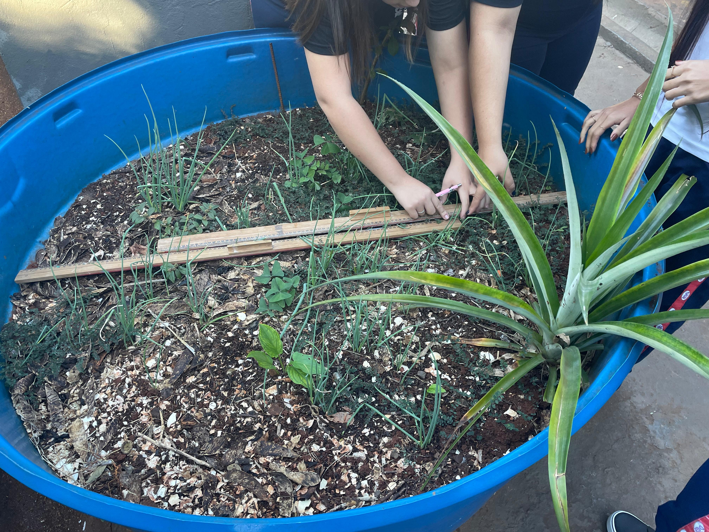
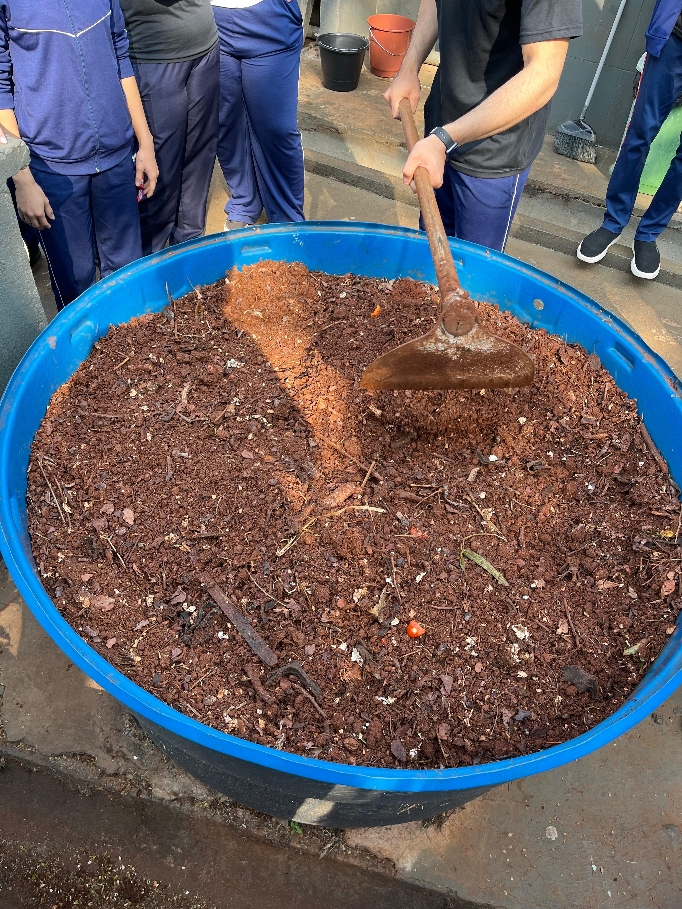
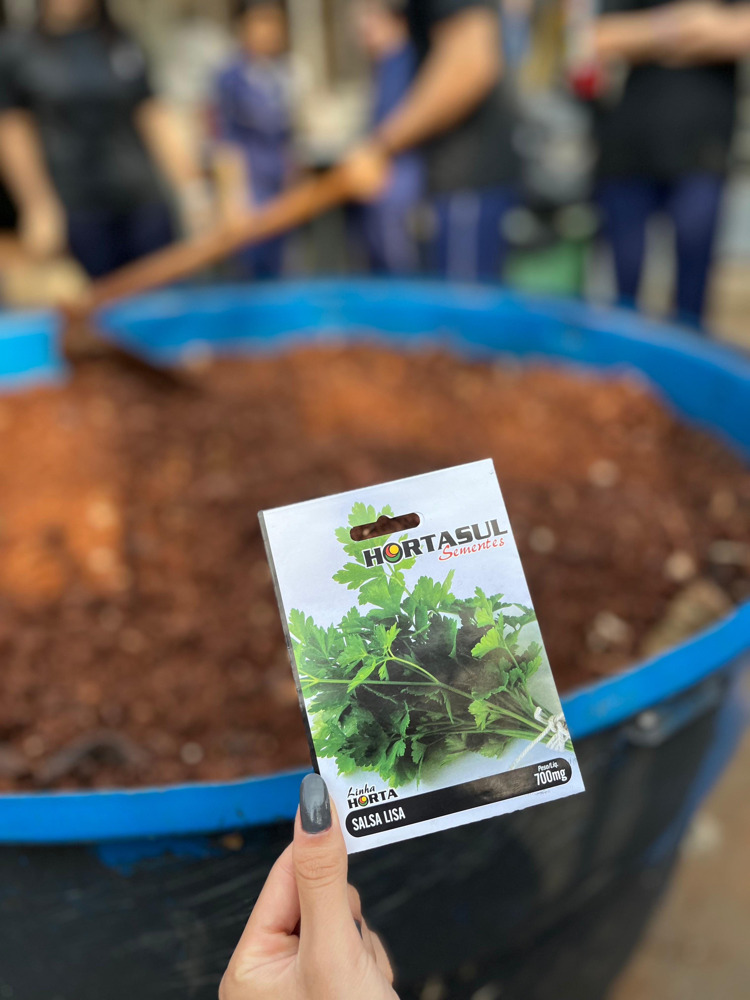
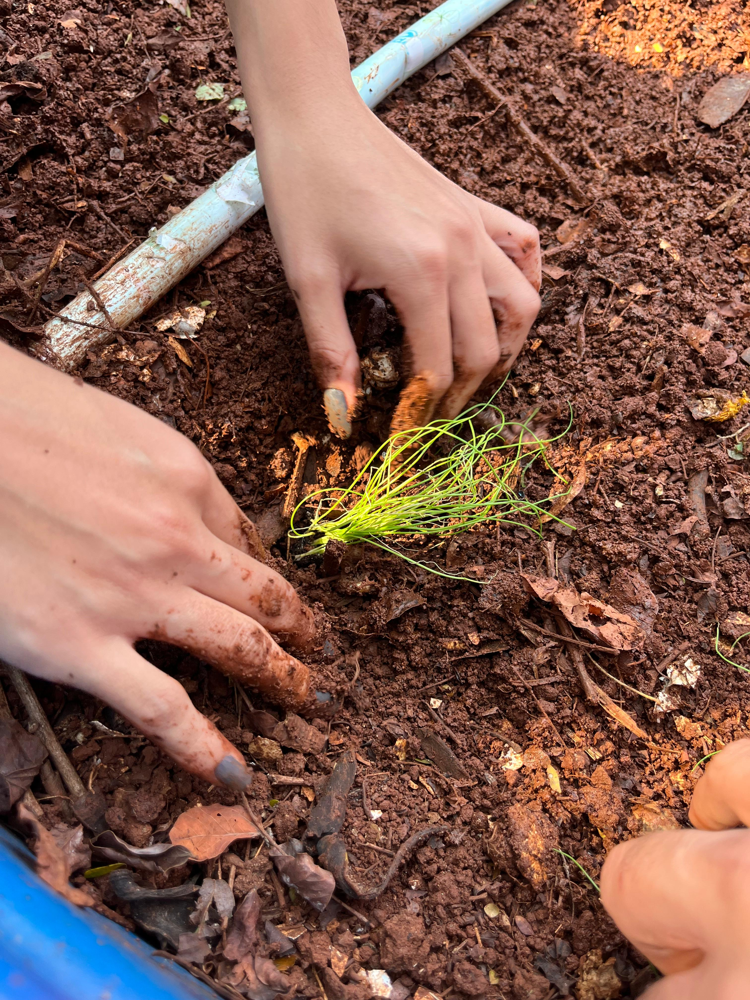
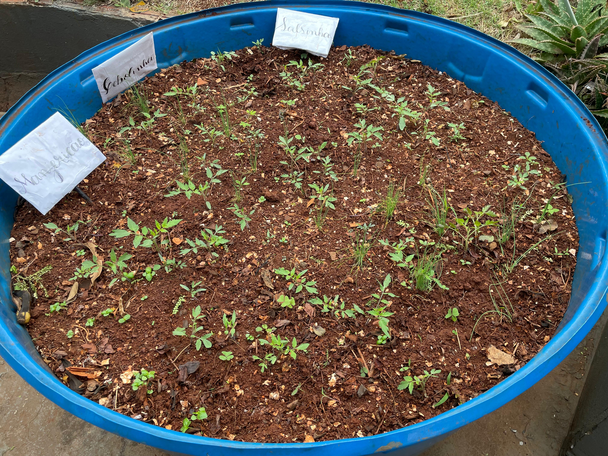

Reutilizando: uma ideia para o uso de caixas d’água na agricultura urbana
Uma proposta investigativa que convida os estudantes a pensar sobre reaproveitamento, organização do espaço e possibilidades de cultivo no contexto escolar.

Contextualização da atividade
A atividade "Caixa d’água" surge a partir de uma situação real presente no ambiente escolar: uma caixa d’água sem utilização localizada no pátio da escola. A proposta convida os estudantes a investigarem possibilidades de reutilização desse recurso no contexto da agricultura urbana, articulando conhecimentos de diferentes áreas.
A proposta consiste em investigar como uma caixa d’água pode ser reutilizada para o cultivo de plantas, considerando aspectos como área disponível, divisão do espaço, irrigação e viabilidade do sistema.
A atividade não possui um único caminho de desenvolvimento. Os estudantes são convidados a formular hipóteses, construir representações, testar ideias e propor soluções para o problema.
Problema:
No pátio da escola há uma caixa d’água que não está sendo utilizada. Considerando a prática de reutilização de recipientes para plantio, de que maneira ela poderia ser aproveitada? O que poderia ser plantado nela? Como organizar o plantio e quais condições seriam necessárias para sua manutenção?
Informações da atividade
Ensino Médio.
Variável, conforme a organização da proposta e os desdobramentos da investigação.
Preferencialmente em grupos.
Ciência, Tecnologia, Engenharia, Arte e Matemática.
Área, perímetro, estimativas, organização espacial e interpretação de medidas.
Local para plantio, materiais para plantio, réguas, fita métrica, trena, folhas de sulfite e computadores.
Materiais para download
Possibilidades de desenvolvimento
A atividade pode ser iniciada a partir da observação do espaço escolar e da discussão sobre a reutilização da caixa d’água. Em um primeiro momento, o professor pode convidar os estudantes a levantar hipóteses sobre usos possíveis do recipiente e a justificar suas ideias com base no contexto da escola.
Em seguida, os grupos podem investigar dimensões da caixa d’água, formas de organizar o espaço interno, tipos de cultivo mais adequados e condições necessárias para a manutenção do plantio. Dependendo dos objetivos da aula, a proposta pode envolver registros, esboços, cálculos, pesquisa sobre espécies vegetais e discussão sobre irrigação e cuidados com a plantação.
Ao final, é possível promover momentos de socialização das propostas elaboradas, comparação entre soluções e reflexão sobre a viabilidade das ideias construídas pelos estudantes.
Dicas para aplicação
A proposta pode ser desenvolvida de forma colaborativa, favorecendo a discussão entre os estudantes e a construção coletiva de soluções. O professor pode incentivar diferentes formas de registro, como esquemas, tabelas, desenhos ou anotações, de modo a apoiar a organização das ideias produzidas pelos grupos.
Também é possível adaptar a atividade conforme o tempo disponível, os recursos da escola e os objetivos pedagógicos pretendidos, ampliando ou simplificando a investigação de acordo com a realidade da turma.
Registros da aplicação








Sugestão de leitura
Para conhecer discussões mais detalhadas sobre esta atividade, seus encaminhamentos e aspectos observados em sua apresentação, recomenda-se a leitura do trabalho abaixo.
Raciocínio diagramático no desenvolvimento de atividades de modelagem matemática no contexto de itinerários formativos
CARUZO, Ariely Aparecida; SILVA, Karina Alessandra Pessoa da. Raciocínio diagramático no desenvolvimento de atividades de modelagem matemática no contexto de itinerários formativos. Seminário Internacional de Pesquisa em Educação Matemática, Brasília, p. 1–15, 2024. Disponível em: https://www.sbembrasil.org.br/eventos/index.php/sipem/article/view/504.. Acesso em: 20 mar. 2026.
Acessar leitura